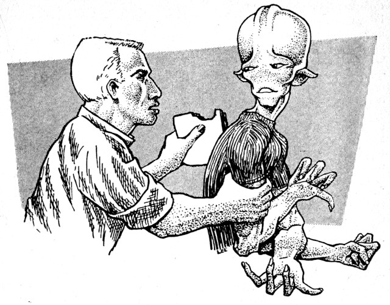

Illustrated by LEE
The foot-in-the-door technique would
work perfectly for any salesman—if
he had an invisible foot!
[Transcriber's Note: This etext was produced from
Infinity Science Fiction, October 1956.
Extensive research did not uncover any evidence that
the U.S. copyright on this publication was renewed.]
"And that was Smoky Donahue's Western Swingsters, playing Red Dust for all you Martian fans out there. Now let's take a look at the new recordings, hot off the presses this week from all over the system. Looks like we have a real treat for you tonight, folks! There's a brand-new label from way out in outer space. Yes, sir, the very first record put on wax by the Martian Recording Company, and it ought to be a lulu. We'll spin it for you in just a minute, but first, here's a message from our sponsor, the Oxygen Corporation of America—Earth's oldest and finest manufacturers of compressed oxygen equipment.
"Friends, when you're scooting around in your little rocket roadster, do you ever stop to think that your fine vehicle deserves nothing but the best in equipment and accessories? Well, next time, take a look at your oxygen tanks. Are you still using the cumbersome, old, outmoded tank, with ugly valves and low capacity? Wouldn't you rather have the new, streamlined Oxco tank that gives you months of service without refilling? Models cost as low as four thousand dollars, and they're guaranteed up to a full year. Call your local rocket supply store today, and get all the facts. When you see the new Oxco, you'll know why we say ... Oxco never leaves you breathless!
"Well, I see Jonesy, our control board operator, waving at me like mad, folks. He wants to hear this new disc from Mars, too. So—without further ado—here we go. It's on the Canal label, and it's called ... Melancholy!"
The boss slammed the file drawer shut in disgust.
The Martian, standing before his desk, shuffled his feet and rotated his cap with his third hand. "Displeasing you?" he said. "Come back other time do?"
"No!" Huber pointed to the chair. "You sit down. We're going to straighten this whole thing out right now."
He reached across the desk and snapped on the intercom. "Davis!" he said. "We're going to have a foremen's meeting. This minute!" Davis, at the other end, was inclined to argue, but the boss stopped him. "Don't tell me we're busy! I know our production schedule better than you do. Get the foremen up here right away!"
The foremen shuffled in ten minutes later. They looked sheepish, like small boys caught in the jam pot.
Huber got right to the point.
"Your boys have been picking on Chafnu again. And I won't stand for it!" He slapped the desk with a board-like palm for emphasis.
Curly, the foreman, said: "Aw, gee, boss. Just a little rhubarb, that's all. Just a little kiddin' around. Boys didn't mean any harm."
"Mean any harm?" Huber's eyes went so wide they threatened to pop out on the desk. "Chafnu! Show it to 'em."
The Martian looked embarrassed. Then he slowly lifted his rope-like foot and displayed the quarter-sized burn on the heel.
"Kidding around!" Huber looked dangerous. "That's what you call kidding around? They could have burned Chafnu to a crisp! You know how sensitive he is!"
Burke, the small parts man, said placatingly: "Well, the boys are kinda edgy, Mr. Huber. It must be the weather or something. They need a little what-do-you-call-it, outlet."
"Besides," said Curly, "the Goons kinda provoke 'em, you know what I mean—"
"Don't ever use that word to me!"
The irritation that had been brewing in Huber all day now boiled over. He walked around the desk and shoved his big-jawed face up close to Curly's chin. His small stature made no difference; Curly trembled nervously.
"They're Martians," the boss said. "Not Goons. Understand? Martians! Isn't that right, Chafnu?"
Chafnu looked as if he wished Earth had never been born. He glanced up guiltily at the assembled foremen.
"All right," said Huber. "Now let's get this straight. One more incident like today, and I'll hold you guys responsible. Chafnu and all the other Martians in this plant are doing good work—better, if you want to know, than most of you Earth guys—"
"Sure," mumbled Curly. "If we had three hands, we could—"
"That's enough, I said!" shouted the boss. He swabbed his forehead with his hand. "We got Oxco tanks to turn out, so let's get to it. The meeting's over!"
The foremen left, more crestfallen than when they had entered the office. Chafnu looked uncertain as to what he should do next. The Martian simply sat and watched Huber go back to his desk.
The boss went over to the musaphone and flipped the switch.
"My nerves are shot," he told Chafnu.
He sat back in his swivel chair, sighed, and closed his eyes. The haunting strains of Melancholy drifted through the office, and Huber listened and slowly relaxed.
The Martian just sat there, miserably.
"Hi, there, fly-boys!
"Time to climb into the wild black yonder again, with your old skipper, Vince Vanelli, bringing aid and comfort to all the ships in space. We got a rocket chamber full of new notes and blue notes, all the latest hits from the Bings of Earth to the Rings of Saturn. So buckle your g-belts, and lend an ear to the biggest instrumental smash that's hit the System in an eon.
"You asked for it, spacemen, so here it is again. That everloving outer-space symphony—Melancholy!"
The Pursuit was in orbit when the accident happened.
Earth's gravity gripped it like a giant hand and brought it plummeting down into a granite quarry in Wisconsin. It was a Sunday, and the explosion of the ship's reactors didn't kill anyone but the two pilots. There was a routine investigation, but the evidence, as usual, was spread across too many states to make it productive.
But when the Marjorie, a space freighter, got herself in trouble, the pilot managed to reach the Earth Communication Center before he disappeared forever into the Mediterranean. The voice cried out something like "Ox on the bum!"
Then the Pinafore registered an S.O.S. This time an accident was avoided. A tug was dispatched to the site in a hurry, and the pilots were transferred. The captain of the tug submitted his log to the Space Commerce board, and the most pertinent page read:
"Pinafore's oxygen tanks (mfr. Oxco, Serial #2853) were defective, and were seriously endangering life aboard."
Diana Huber tilted the decanter and held it over the glass a little too long for her husband's liking.
"Easy, easy," he cried from his chair. "How much of that stuff do you think I can take?"
"This one's mine," she said, starting to pour another.
Huber shifted in his seat. "Aren't you overdoing it, honey?" he asked uneasily. "I mean, do you really think you should drink so much?"
"It kills time," she said. "It makes the hours a little shorter. What else have I got to do? You've got your job. What have I got?"
"Well, I only meant—I mean, if the kids—"
"The kids are pasted to the screen," she replied, meaning that they were at the TV set. She flopped on the overstuffed sofa and yanked her skirt almost up to her thighs. She still had lovely legs, Huber thought, but she used them like an old frump. And she wasn't even fifty—just forty-seven. Why did she have to flop around that way?
"Well, let's have it," she said, twirling the amber fluid in her glass. "My Hard Day at the Office. By George Huber, Age Eleven."
He looked up, almost shyly. "Oh, nothing new," he said in a low voice. "Same old stuff."
Diana swallowed half her Scotch. She gave a little cough, blinked, and said harshly: "You know that's not so. Something's up. Some kind of labor trouble. And your tanks are blowing out all over space. Is that the 'same old stuff,' George, dear?"
Huber put down his paper. "It's the men!" he said. "They've gone nuts or something! Mopin' around all day, singin' the blues, snapping your head off if you make one little suggestion—"
Diana closed her eyes. "I'm listening. Go on."
"Something's gone wrong with all of them," said Huber, eager to pour out his overburdened heart. "They act like they just don't want to work. Turning out plain junk on the assembly line. Even the Accuracy Control boys are letting down on the job, and they're supposed to be cracker-jacks! In fact, the only guys that are doing any kind of job are the Martians. I hired myself fifteen more today. But that's only gonna stir up more fuss...."
"I hate them," said Diana, sipping slowly and looking down into her glass moodily. "Ugly, slippery things. Ugh!"
"What?" said Huber blankly.
"Your Martian friends. Taking away good jobs from Earth people. Never buying anything. And those awful arms! If you ask me, we ought to send them right back where they—"
"You don't know them!" he interrupted loudly. "They're nice, quiet folks. They work hard and they don't give you a hard time. They're ten times as efficient as some of the bums in—"
"All right, all right! You don't have to shout at me." Diana stood up and gulped the rest of her drink down. Then she went over to the phonograph.
"Are you going to play that song again?" asked Huber.
"Do you mind?" she said sarcastically. "I happen to like it."
Huber said something under his breath and returned to his paper. But when the record started, he put it down and just listened as the strange, haunting Martian melody filled the room.
Blinker: Then the Martian says, "For Pete's sake! Why can't you clean up this filthy cave sometimes?"
Straight man: So what did his wife say?
Blinker: So his wife says, "What do you expect? I've only got three hands!"
(Laughter)
Straight man: Well, tell me, Blinker—what else did you do on your trip to Mars? Did you meet any—what's wrong?
Blinker: Nothing's wrong. Just don't step in front of the camera, that's all.
Straight man: Hah, hah. Sorry, old man. Er—tell me, what else did you do on—
Blinker: Now for Chrissakes, I told you to get out of the way! What're you trying to do? Hog the show?
Director: (OFF CAMERA) Psst! Blinker! What are you doing? We're on the air!
Blinker: I don't care if we're on the air —— air! I won't be pushed around!
Straight man: You won't, huh? Okay, you fat tub of lard! I've had enough of your—
Director: Blinker! Adams!
Blinker: I'll punch that stupid face right into—
Announcer: Ladies and gentlemen, due to circumstances beyond our control, the Universal Broadcasting Company interrupts the Joe Blinker Comedy Hour to bring you a program of recorded mood music. Our first selection is a popular record on the Canal label, entitled Melancholy.
The chairman rapped his gavel for order.
"One more demonstration like that, and we'll have to clear the room of spectators," he warned. "This inquiry is a serious matter, and we cannot permit levity. Now, Mr. Collins, go on with your testimony."
Montague Collins, the 51% owner of the Oxygen Corporation of America, looked uncomfortable.
"I beg your pardon," he said. "I did not mean to be funny. I agree with the chair that defective equipment is a serious business, and my reference to the Martians' three hands was meant in earnest."
"We understand. Go ahead, Mr. Collins."
"I was merely stating that, contrary to articles in the public press, the Martians' efficiency level has been more than maintained at the Oxco plant. It's the human efficiency level that has declined."
There was an excited buzzing.
"I believe," he continued, mopping his face, "that this fact will be borne out by the experience of many other manufacturers. And I'd like to submit in evidence some replies to letters I have sent to executives all over America. You will see that they corroborate what I have told you. May I have the Chair's permission to read these replies as part of my testimony?"
"It does not seem relevant at the moment, Mr. Collins, but they may be submitted for publication into the record. Please tell us about your own experience."
"I'm afraid I do not have much to add. As a result of our troubles, we are increasing the number of Martian employees considerably."
"Just how many is 'considerable,' Mr. Collins?"
Montague Collins cleared his throat.
"We now employ four Martians to every three humans."
Not even the gavel could quiet the spectators this time.
Curly was about to demolish a ham-and-swiss on rye. But when the Martian moved across his line of vision, he paused and called out:
"Hey, Chafnu!"
The Martian stopped and swiveled his bulbous head around at the foreman. "Yes?" he said.
"Want a bite of this?" He held up the sandwich.
"No, your thanks," said Chafnu.
"Go on, have a taste. It's good for you."
"Do not think this," said Chafnu, trying to solve the old riddle of how to produce an engaging smile. He merely succeeded in looking like a surprised beetle.
"Whatsamatter, Chafnu? Too good to eat with your foreman?" Curly flushed. The hirings-and-firings of the last two months had unnerved him, and the fact that he was handling his own job poorly only made the situation worse.
"Have not required to food," said the Martian. "Best existence of silicone substances. Understanding do? However, your thanks, and very."
He began to move on, but Curly was obviously in the mood for trouble. He got up from the bench and put his beefy hand around one of Chafnu's arms.

"It's pain," said Chafnu mildly. "Improvement if released, your thanks."
"You're a wise guy, Chafnu," said Curly. He knew that he was skirting a dangerous edge, but he was just too irritated to care. "You're a bug-eyed bastard. What do you say about that?"
"I have comment inward," the Martian answered, trying to pull away from the foreman's grip.
"In fact," said Curly, now squeezing harder, "I got a good mind to kick you right in the seat of the pants. And keep kickin' till you fly right back to Mars."
"Pain," said Chafnu. "Can release do?"
"And what if I don't?"
"Am in power yours," said the Martian.
"You're goddam right. And I'm going to give you a little lesson in manners, you—"
"Curly!"
Huber came striding over fast, and the look on his face was sufficient to make the foreman drop both Martian and sandwich.
"Gee, boss, I—"
"Never mind!" Huber thundered. "You had the chance. Now you're getting your walking papers! Get out of here, Curly! Get out of here now!"
"But Mr. Huber—"
"I said beat it! You're not the foreman around here any more. And in case you want to know who your successor is, take a good look!"
Huber pointed a shaking finger at Chafnu, who bowed his head modestly.
"... and here it is, folks! The big one! The top one! The melody that swept the Solar System! You've proved that you love it. All the disc jockey requests, all the record sales, all the juke-box half-dollars have shown that, once more, for the forty-first week in a row—the number one tune on your hit parade is—"
"Melancholy!"
"But don't get excited, folks! Because I'm not going to play it for you! I'm going to spin it all for myself—and you can just sit there and drool! And if anybody wants to fire me for it, let 'em go ahead and see if I care! Heh, heh, heh—Ulp!"
Woolsey, of the U.S. Department of Labor, zipped up his brief case and went over to the office window.
He looked outside at the Capitol building, but the location permitted only a fractional view of the impressive edifice. Anyway, the sun was shining brightly and the grass was green.
The man sitting in the chair facing his desk recalled his presence with a polite cough.
"Oh," said Woolsey, turning around. "Sorry. Mind's wandering, I guess."
"I know how you feel, Mr. Woolsey. My job is getting me down, too. Can't seem to get interested in the newspaper any more. Just the thought of working irritates me."
Woolsey sat down, humming softly to himself. He toyed with a paper clip, then started to bend it out of shape.
"But I guess I better get the story," sighed the man in the chair. "Boss will give me hell otherwise. Although," he added, "he seems to care about working even less than I do."
"Yes," said Woolsey abstractedly. "My, it certainly is a nice day. Damn shame to be indoors on a day like this."
"What say we go for a walk?" asked the reporter. "We can take a stroll around the fountain. We can do our business just as well."
"Splendid idea!" said Woolsey. "This place is getting on my nerves."
Outside, the Assistant Labor Secretary said:
"Oh, it's true, all right. The Martian labor force now outnumbers the humans by five to one. Some companies have completely converted to Martians—like the Oxco Corporation, for instance. In fact, it probably won't be very long before we'll have an all-Martian labor force across the country."
The reporter said: "Can I quote you?"
"If you like." The Labor man shrugged. "Seems like employers just can't find men interested in their jobs. But the Martians go merrily along, using their three hands at maximum efficiency. And it's not just in manual labor that they're gaining tremendous amounts of ground."
"How do you mean?"
Woolsey paused by the flowing fountain, watching the cool gusher leap from the mouth of a stone fish.
"Well," he said vaguely, "they're taking over other kinds of work. White collar stuff. Teaching. Architecture. In fact, I hear that the Brooklyn Dodgers are considering a Martian for third base—"
"No!"
Woolsey said: "Water looks nice, doesn't it? I wonder if they would mind if I took my shoes off and—"
"Mr. Woolsey!"
"Oh, just for a minute, you know. Can't see any harm in it. Matter of fact, should be quite refreshing."
"Yes, but, sir—"
"Oh, come now," said Woolsey, starting to unlace his shoes. "If you'd rather work, go ahead. I want to relax." He took his shoes off and began to work on the socks, humming the strains of Melancholy to himself.
The reporter scratched his head. "I don't want to work," he confessed. "I haven't wanted to work for months. The whole idea of working just makes me sore."
He hesitated a moment, and then reached down for his shoe-laces.
The Martian stood in front of the boss's desk, but this time, there was no nervousness in his manner.
"Chafnu—" said Huber.
"Yes, sir?" said the new foreman.
"Chafnu, I have something to tell you. And I don't know how you're going to take it."
"Please?" said Chafnu.
Huber got up and went to the table. There was a leather suitcase perched on top. He took it off and placed it on his desk; then he opened it. He reached over and took Diana's photograph from the blotter and put it inside.
"You've been doing a good job," the boss continued. "An excellent job, as a matter of fact."
"Properly thanking," said Chafnu.
"I don't want you to thank me. It's only logical, after all. Especially when we put nothing but Martians in your shop. We needed a Martian foreman then."
He went to the bookcase, lifted out two of the books, and dropped them into the suitcase.
"Now things have changed again, Chafnu. Changed drastically. And the Oxygen Corporation of America is going to need your help."
"Desirable of service," said Chafnu. "Very willing of it."
"I know you are. And that's why the Board of Directors have decided that you should take over the whole show." He clicked the suitcase shut with an air of finality.
"Uncomprehend," said the Martian blankly.
"We're an all-Martian plant now," Huber said. "Even the front office will soon be all-Martian. The stockholders figure that the only reasonable thing to do is put a Martian in charge of everything. You were my recommendation, and the Board accepted it."
"But strange. You work job, do not?"
"If you mean it's my job, the answer is no. It's not my job any more. Oh, don't feel sorry for me. I want to quit. I just haven't been pulling my weight around here for the last year. I'm getting lazy or something, Chafnu. The whole idea of working bores me silly."
Huber went over to the musaphone and turned it on.
"Melancholy," he said, as the haunting phrases emerged from the loudspeaker. "That's the way I feel about working. You know something, Chafnu? Sometimes I think that damned tune has something to do with it!"
"Sir?"
"Oh, I know it sounds crazy. But somehow, the way I feel about working and the way that tune sounds—they're all mixed up in my mind. Oh, well." The boss picked up his suitcase. "The job's yours, Chafnu. So's the office. Both of 'em aren't the greatest in the world, but I had some fun."
He stuck out his hand. "Good luck," he said.
"Cannot," said Chafnu.
"What?"
"Impossible for acceptance," said the Martian.
"But why?" said Huber. "You know you can handle it."
"Confidence great and very," said the Martian. "But reason is not for acceptance. Plentiful job for Martians."
"I don't get you."
"Declined offer responsible to plan change, understand. Quitting from factory do Chafnu. Otherwise business."
"You mean you're leaving the factory? You're going to take another job?" Huber looked befuddled.
"Excitement offer," said the Martian. "Great salary remuneration. Opportunity."
"Well, I'll be damned." Huber grinned and slapped Chafnu lightly on his sensitive back. "I guess you know what you're doing, Chafnu. Plenty of opportunities for a Martian these days—especially since humans don't seem to want to work."
"Situation so," said Chafnu.
"Okay, then," said Huber. "Whatever you have in mind, Chafnu, I hope you make a go of it. Good luck, old pal!"
"Friendship," said Chafnu warmly, clasping Huber's hand in his three and shaking it enthusiastically.
"Hello you today! Time again emerging for spins on table with disc black musical. Back up and sit relax! Pipe smoke and good food eating! Abundancy music available herein, bring pleasure immensely into home yours. Currency latest in recordings, employing old yours Chicho Chafnu, piping soon big favorite Martian song Melancholy.
"But firstly, a message from sponsor ours...."